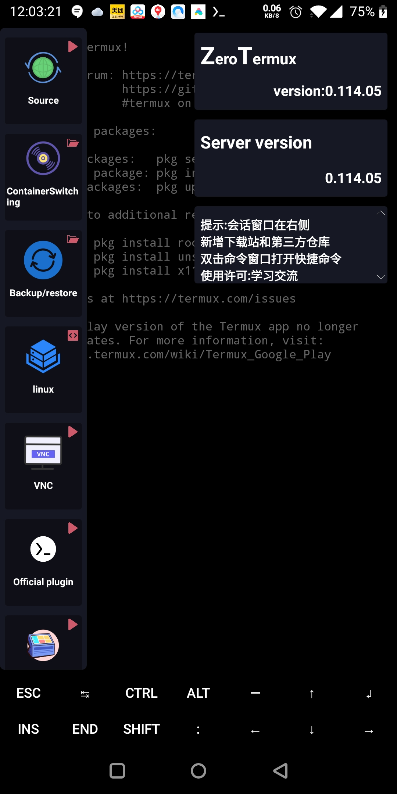

ZeroTermux 为什么能在一个 APK 里跑完整 Linux 桌面？
同样是 Android 终端模拟器，ZeroTermux 凭什么把容器管理、X11 图形、悬浮窗口和镜像源切换全做了？拆解它背后的 proot 容器层 + 侧边栏 UI 封装的双层架构。
同样是 Android 上跑 Linux 的终端模拟器，为什么 Termux 官方版本只能给你一个 shell，而 ZeroTermux 却能在同一个 APK 里塞下发行版容器切换、X11 图形桌面、悬浮窗口、一键镜像源切换这一整套东西？去 ZeroTermux官网 翻了一遍功能清单后我才想明白——它根本不是 Termux 的替代品，而是在 Termux 生态之上重新搭了一层「操作系统管理器」。
架构分层：把「终端模拟器」做成「发行版管理器」
先搞清楚两件事。第一，ZeroTermux 底层依然用的是 Termux 的运行时——pkg 包管理器、$PREFIX 目录结构、甚至 termux-x11 二进制，都是 Termux 社区维护的那套。第二，它加的东西全在上层：一个侧边栏菜单系统、一个基于 proot 的容器管理机制、以及若干针对 Android 权限的桥接代码。
这个分层设计最妙的地方在于，它不 fork Termux。如果 Termux 官方修了一个安全补丁或者更新了某个二进制包，ZeroTermux 用户只要跑一次 pkg update 就能拿到——这和那些直接 fork Termux 然后长期落后于上游的变种完全不同。ZeroTermux 自己的代码只负责「管理」，不负责「执行」。

容器管理的真相：proot + tar 包，没有虚拟机
先从 ZeroTermux下载 装好 APK，ZeroTermux 就能让你在手机上装 Debian、Kali、Ubuntu 这些完整发行版，靠的不是 QEMU 虚拟机，也不是 chroot，而是 proot。proot 是一个用户态的容器工具，它利用 Linux 内核已有的 ptrace 和 bind-mount 能力，就能在不 root 的前提下创造一个隔离的文件系统视图。
具体流程是这样的：当你从 ZeroTermux 菜单里「安装 Debian」时，它做的事情本质上是：
- 下载一个预打包的
.tar.gz根文件系统（rootfs） - 解包到
/data/data/com.termux/files/home/.proot/下某个子目录 - 生成一个启动脚本，里面写好了 proot 的参数（
-r指定根目录、-b绑定 /dev 和 /proc、-w设工作目录、--link2symlink处理 Android 的符号链接限制）
容器恢复也是同理。你在备份时打一个 tar 包存到 /sdcard/xinhao/data/，恢复时 ZeroTermux 扫描这个目录、让你选包、输入新容器名，然后解包 + 注册到容器列表。整个过程没有任何数据库——容器列表就是 proot 目录下的子目录名，「注册」就是在一个文本文件里追加一行路径。
这套设计的代价也很明显：proot 容器里的进程性能比原生低 15%~30%，而且 Android 的 SELinux 策略偶尔会挡住 bind-mount 操作。但换来了一个巨大的优势——你不需要 root，也不需要在手机上跑内核模块，任何能装 APK 的设备都能用。
一键镜像源切换：改一个文件而已，为什么值得做成菜单？
ZeroTermux 菜单里有个「切换源」功能，点开就能在清华、中科大等国内镜像之间选。从技术角度说，这就是把 $PREFIX/etc/apt/sources.list 里的 URL 替换一下——一行命令的事，为什么要做成 UI？
因为大部分用户不知道这个文件存在。Termux 的默认源在海外，国内用户第一次跑 pkg update 经常遇到 20 KB/s 的下载速度或者直接超时。ZeroTermux 的开发者发现，新用户卡住的第一幕就是源太慢，而让他们手动用 nano 编辑一个藏在 $PREFIX/etc/apt/ 深处的文件，门槛太高了。
所以这个菜单的本质是一个「新手防流失机制」——把一个需要理解 $PREFIX 是什么、知道 apt 源文件在哪、会用文本编辑器才能完成的操作，压缩成了三次点击。技术含量不高，但对 80% 的用户来说，这就是能用和不能用的分界线。
X11 图形：termux-x11 + DISPLAY 映射，没有魔法
让我再猜一个你可能好奇的问题：Android 不是 Linux 吗，为什么不能直接跑 X11？答案是 Android 没有 X Window System——它用的是自己的 SurfaceFlinger 合成器。所以要在 Android 上跑 GUI 程序，你需要一个 X Server 把 X11 协议翻译成 Android 能画的东西。
ZeroTermux 菜单里「安装 X11」背后做的事和命令行装的一模一样，具体参数细节在 ZeroTermux文档 里写得很清楚：装 termux-x11-nightly 包、装 pulseaudio、启动 termux-x11 :0 &、设置 DISPLAY=:0。termux-x11 本身就是一个 X Server 实现，它把 X11 客户端的绘制请求转成 Android 的 Canvas 调用画在一个全屏的 View 上。
在发行版容器里跑 GUI 还要多一步——把 DISPLAY 映射到宿主。proot 有 --bind 参数可以把宿主的 X11 socket 文件映射进容器，这样容器里的 GUI 程序就能连上宿主的 termux-x11 了。ZeroTermux 的发行版启动脚本里通常已经写好了这个绑定，所以大部分情况下你不用手动管。

悬浮窗口：Android 权限的巧妙利用
悬浮窗口可能是 ZeroTermux 最「花活」的功能——把终端以小窗口的形式浮在任何应用上面。技术上它利用的是 Android 的 SYSTEM_ALERT_WINDOW 权限，这个权限允许应用在其他应用之上画东西。ZeroTermux 申请到这个权限后，创建一个独立的 WindowManager.LayoutParams，把终端的 TextView 塞进去，就能拖动、缩放、点击输入了。
听起来简单，但 Android 厂商的定制 ROM 经常在后台杀这种悬浮窗进程——所以 ZeroTermux 还需要你手动把它加入电池优化豁免。这就是为什么文档里特意提到「后台运行权限」：悬浮窗口的内容来自当前的终端会话，进程被杀了终端就没了。
这个功能也有明确的适用边界——短命令、临时看日志可以，长时间任务或重负载 GUI 就不行。它本质上是一个「临时观察窗」，不是第二个终端。
哪些场景适合，哪些不适合
说了这么多原理，总结一下这个设计的取舍逻辑：
适合的场景：想在 Android 上做轻量开发（写个 Python 脚本、跑个 SSH 隧道、用 git 同步代码）、想跑一些 Linux 命令行工具（ffmpeg、imageMagick、tcpdump）、或者纯折腾——在手机上装个 Kali 跑扫描玩。proot 容器的隔离性也不错，装坏了删目录就行，不会搞坏宿主 Termux。
不适合的场景：需要高性能的编译任务（proot 的开销在 make 这种 CPU 密集场景下很明显）、需要 root 权限的操作（proot 里你始终是非 root 用户，而且没有真正的内核权限）、或者只想要一个纯命令行终端不想装任何扩展——那直接用 Termux 官方版更轻量。
还有一个容易忽略的边界：ZeroTermux 的发行版容器不会自动升级，你得自己 apt update && apt upgrade，而且发行版之间的切换没有「无缝迁移」——换容器就是换环境，数据要自己备份。
写这篇的时候我翻了不少资料，从容器恢复到 X11 安装，细节都写得相当扎实。想上手的话，装好 APK 后进应用第一时间先切国内源，后面 pkg install 的体验会好很多。国内开发者维护的这套资料我分别同步到了 GitHub、Gitee 和 GitCode，无论你习惯用哪个平台都能直接访问。